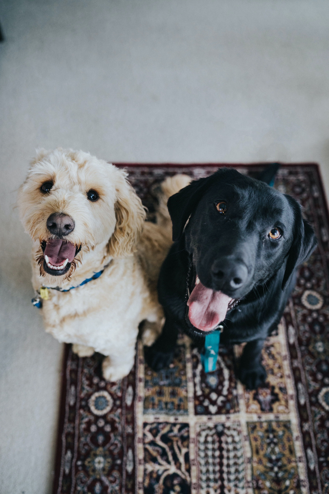
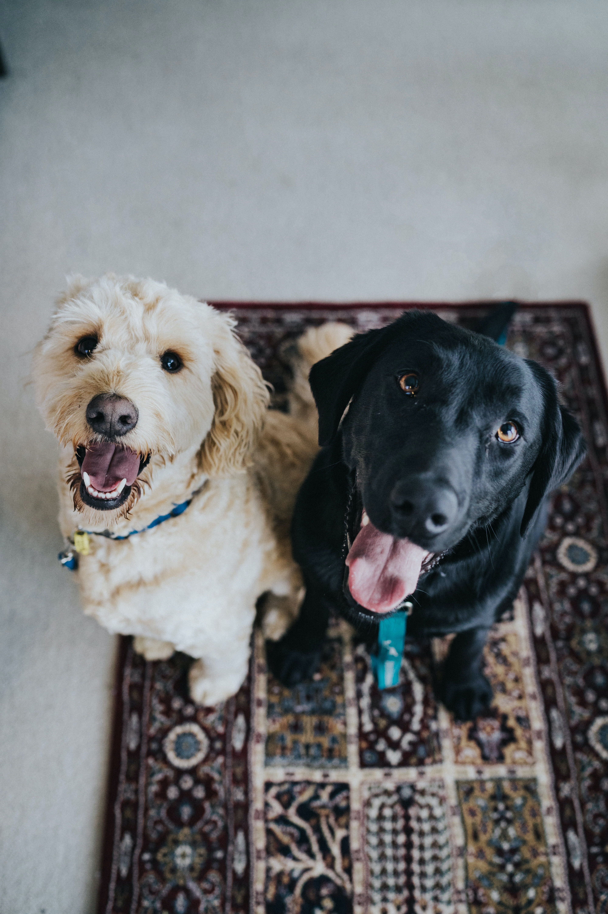

The domestic dog is an extremely social animal and offers a diverse variety of choices as there are well over 300 breeds recognized by the World Canine Organization. Adopting a dog offers mutual benefits between dog and owner. Many studies cite the social benefits of having a companion as well as the reduced feelings of loneliness from adopting a dog. Studies even show medical indicators such as reduced blood pressure and improved lipid profiles. If you have a dog, it is important to make sure that you care for your dog; be mindful of what you feed your dog and provide enough opportunities for exercise. In this page, you will find more information about how to care for your pets throughout the various stages of their lives.
 


Much like humans, dogs need to have a healthy level of activity to keep their organs healthy, as well as sun and fresh air. The minimum recommended time for exercise varies greatly with breed and size differences, but generally a range of 30–120 minutes of exercise is recommended per day! Can you imagine exercising two hours per day? OK, I know that wouldn't bother some of you reading this. But the thought of it to me makes me cringe! And by the way, exercising your dog does not mean you are beiThroughout dogs’ lifespans, they should generally be fed fewer meals as they mature. Puppies should be nursed the first two months, then introduced to three meals per day when they are about three to six months years old. Their food intake should be reduced to two meals per day when they are six months to one year old and finally reduced to one meal after they reach one year old. And a dog’s typical body mass is composed of somewhere between 60 and 70 percent water. The ASPCA says just a 10 percent decrease in body water can cause illness, and a 15 percent loss can cause death, so make sure you keep your pooch hydrated!ng challenged to a push-up contest. Brisk walks are OK too! You can also choose from a variety of toys to encourage physical activity; be sure they are age appropriate and do not pose a choking hazard. Pay careful attention to toys that require supervision.
Keeping your furry family member clean is important to its health. So be sure to brush frequently to reduce the amount of shedding and prevent matted and tangled fur that can prove to be extremely difficult to remove. Check for insects such as ticks and fleas, especially after visiting heavily wooded areas. Bathing is not only important to your dog’s health but can be an exercise depending on how strong willed the dog is. Rinse all of the soap out, as any residual soap can result in a rash. Be sure the soap is formulated for your puppy or dog, since harsh soaps can cause allergic reactions. And as always, be careful how you handle your loved one. No matter the size of your dog, you need to be cautious as you carry your canine. If you have a small dog, then cradle the pup with one hand under the chest and the forearm supporting the back half. If it is a large dog, reach under the belly with both your arms perpendicular to the dog, and use each arm to support the chest and rear as you lift.
You should always consult with your veterinarian, but there is a core set of vaccines that are typically recommended. Vaccines that reduce the exposure risk to things such as hepatitis, rabies, and parvovirus. Others may be determined by your vet depending on the environment in which the dog resides. Some of these include Bordetella bronchiseptica, Borrelia burgdorferi, and Leptospira bacteria.
We’d all love to think our dog is staring at us out of undying devotion and love. But more likely than not, your dog is staring at you for one of two reasons. Either they want something, or they are trying to figure out what you want. In the first scenario, it might be food, or a treat, a walk, or playtime. In the second, you could be training, or you might’ve said something your pup doesn’t understand, and he’s working hard to try to find the meaning in your expression.
s your dog connecting with his inner wolf by howling? Howling, along with barking, whining and other noises is simply one way that dogs have of communicating with each other, and us. Dogs howl to make their presence known and to mark their territory. Dogs also may howl for attention, or wail as a response to loud or high-pitched noises, like an ambulance siren. Sadly for fantasy lovers, howling has nothing to do with the full moon; it’s just your dog’s way of saying (loudly), “Hello!”.
Most dogs bark to alert their owners or other dogs about something interesting, whether it’s a squirrel or deer, a car, or the mail person. Teaching your dog not to bark can include several different methods. Positive reinforcement training teaches dogs to ignore outside distractions by rewarding your dog for quiet behavior, such as passing another dog on the street without barking. The pup quickly learns that being quiet earns a treat, while barking gets them nothing.
There are two times to bathe your dog: when he or she gets notably dirty, such as after a swim in muddy water, and your regularly scheduled baths. How often you bathe your dog depends on your dog’s breed. For example, hairless breeds need the most bathing, with hairless dogs needing a bath once a week to keep their skin healthy. Furred dogs and long-haired dogs don’t need to be bathed as often, as long as you are brushing your dog’s coat regularly. A good bath every 4-6 weeks should be enough to keep their coat shiny and healthy.